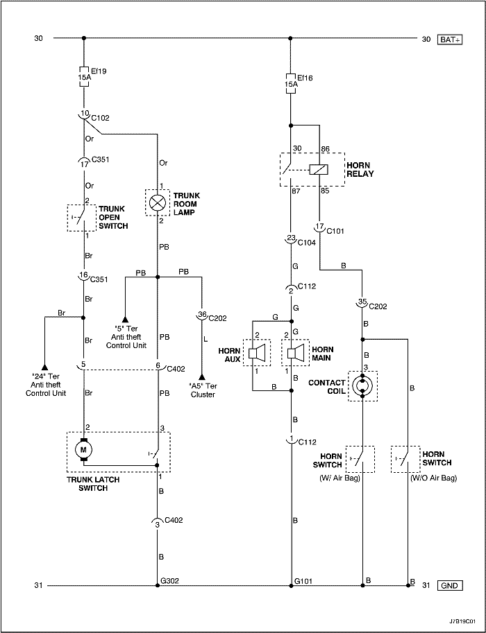
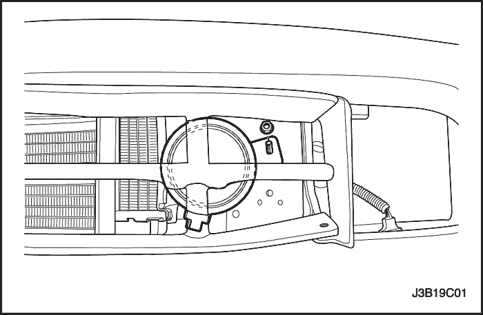

SECCIÓN 9C
CLAXON(S)
Precaución: Desconecte el cable negativo de la batería antes de desmontar o instalar cualquier unidad eléctrica o cuando exista la posibilidad de que una herramienta o equipo pueda entrar en contacto con bornes eléctricos expuestos. La desconexión de dicho cable ayudará a evitar lesiones personales y daños al vehículo. La llave de contacto debe estar en posición LOCK a menos que se indique lo contrario.
ESPECIFICACIONES
Especificaciones de apriete
| Aplicación | N•m | Árbol de transmisión izquierdo | Articulación |
| Tornillo del claxon | 20 | 15 | - |
DIAGRAMAS DE ESQUEMAS Y DIRECCIONES
Sistema de cableado del (los) claxon(s)



MANTENIMIENTO Y REPARACIÓN
servicio con vehículo en marcha

Claxons
Procedimiento de desmontaje
- Desconecte el cable negativo de la batería.
- Desenchufe el conector eléctrico.
- Quite el tornillo y desmonte el claxon o claxons (en la ilustración se muestra el claxon izquierdo, el claxon derecho es similar, si dispone del mismo).
procedimiento de montaje
Aviso: Metales distintos en contacto directo pueden corroerse rápidamente. Asegúrese de utilizar los elementos de sujeción correctos para evitar una corrosión prematura.
- Monte el claxon con su tornillo.
Apretar
Apriete el tornillo del claxon hasta 20 N•m (15 lb-pie) (en la ilustración se muestra el claxon izquierdo, el claxon derecho es similar, si dispone del mismo).
- Enchufe el conector eléctrico.
- Conecte el cable negativo de la batería.
DESCRIPCIÓN GENERAL Y FUNCIONAMIENTO DEL SISTEMA
Claxons
La bocina se encuentra debajo del capó. Está sujeta cerca del radiador en la parte delantera del vehículo. Los claxons se accionan pulsando la almohadilla del volante, que conecta su circuito eléctrico a masa.